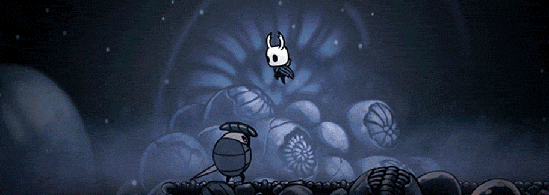
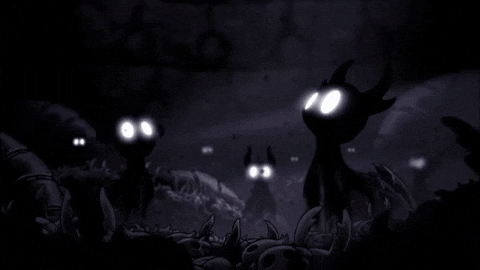
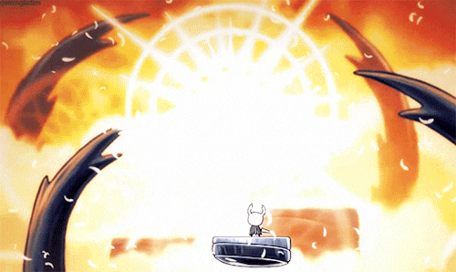
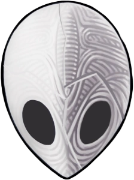

O jogador controla um cavaleiro silencioso que explora Hallownest, um antigo reino de insetos agora em ruínas.
Uma praga misteriosa, conhecida como "A Infecção", corrompeu as criaturas do reino,
e o cavaleiro deve descobrir a origem dessa praga e encontrar uma maneira de detê-la.

Hollow Knight é conhecido por sua atmosfera sombria e melancólica.
O mundo do jogo é cheio de mistérios e segredos, e a trilha sonora atmosférica contribui para a imersão.

O texto de Beaumont chega à conclusão de que Hollow Knight é “um jogo sobre o direito do indivíduo
de existir diante das autoridades que buscam apagá-lo”.

Sem mente pra pensar;
Sem vontade pra quebrar;
Sem voz para gritar o sofrimento.
Nascido de Deus e do Vazio;
Você irá selar a Luz ofuscante que assola seus sonhos.
Você é o Receptáculo;
Você é o Cavaleiro Vazio.
Hollow knight

Por Luiz